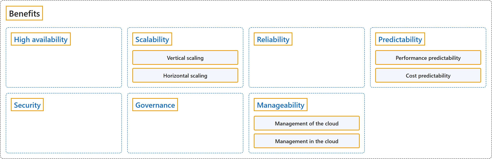

1.5 Benefits
Classification

Glossary
| Term | Definition | 中文解释 | Source |
|---|---|---|---|
| Benefits 优势 |
"You learn how cloud computing can help you meet variable demand while providing a good experience for your customer. You also learn about security, governance, sustainability, and overall manageability in the cloud." | 你将了解云计算如何帮助你满足可变需求，同时为客户提供良好的体验。你还将了解云中的安全性、治理、可持续性和整体可管理性。 | Microsoft, n.d.-a, "Introduction" unit, para. 1 |
| High availability 高可用性 |
"High availability focuses on ensuring maximum availability, regardless of disruptions or events that may occur." | 高可用性侧重于确保最大可用性，无论可能发生何种中断或事件。 | Microsoft, n.d.-b, "High availability" section, para. 1 |
| Scalability 可伸缩性 |
"Scalability refers to the ability to adjust resources to meet demand." | 可伸缩性是指调整资源的能力，以满足需求。 | Microsoft, n.d.-b, "Scalability" section, para. 1 |
| Vertical scaling 垂直缩放 |
"Vertical scaling is focused on increasing or decreasing the capabilities of resources." | 垂直缩放侧重于增加或减少资源的能力。 | Microsoft, n.d.-b, "Scalability" section, para. 3 |
| Horizontal scaling 水平缩放 |
"Horizontal scaling is adding or subtracting the number of resources." | 水平缩放是增加或减少资源的数量。 | Microsoft, n.d.-b, "Scalability" section, para. 3 |
| Reliability 可靠性 |
"Reliability is the ability of a system to recover from failures and continue to function." | 可靠性是系统从故障中恢复并继续运行的能力。 | Microsoft, n.d.-c, "Reliability" section, para. 1 |
| Predictability 可预测性 |
"Predictability can be focused on performance predictability or cost predictability." | 可预测性可以侧重于性能可预测性或成本可预测性。 | Microsoft, n.d.-c, "Predictability" section, para. 1 |
| Performance predictability 性能可预测性 |
"Performance predictability focuses on predicting the resources needed to deliver a positive experience for your customers." | 性能可预测性侧重于预测所需的资源，以便为客户提供良好的体验。 | Microsoft, n.d.-c, "Performance" section, para. 1 |
| Cost predictability 成本可预测性 |
"Cost predictability is focused on predicting or forecasting the cost of the cloud spend." | 成本可预测性侧重于预测或预估成本，对象是云支出。 | Microsoft, n.d.-c, "Cost" section, para. 1 |
| Security 安全性 |
(context) "On the security side, you can find a cloud solution that matches your security needs." | （语境）在安全性方面，你可以找到符合你安全需求的云解决方案。 | Microsoft, n.d.-d, "Describe the benefits of security and governance in the cloud" unit, para. 3 |
| Governance 治理 |
(context) "Whether you're deploying infrastructure as a service or software as a service, cloud features support governance and compliance." | （语境）无论你部署的是基础结构即服务还是软件即服务，云功能都支持治理和合规性。 | Microsoft, n.d.-d, "Describe the benefits of security and governance in the cloud" unit, para. 1 |
| Manageability 可管理性 |
(context) "There are two types of manageability for cloud computing, and both are excellent benefits." | （语境）云计算有两种类型的可管理性，两者都是出色的优势。 | Microsoft, n.d.-e, "Describe the benefits of manageability in the cloud" unit, para. 1 |
| Management of the cloud 云管理 |
"Management of the cloud speaks to managing your cloud resources." | 云管理指的是管理你的云资源。 | Microsoft, n.d.-e, "Management of the cloud" section, para. 1 |
| Management in the cloud 云中的管理 |
"Management in the cloud speaks to how you're able to manage your cloud environment and resources." | 云中的管理指的是你能够通过什么方式管理云环境和资源。 | Microsoft, n.d.-e, "Management in the cloud" section, para. 1 |
References
- Microsoft. (n.d.-a). Introduction [Training unit of Describe the benefits of using cloud services]. Microsoft Learn. Retrieved October 26, 2026, from https://learn.microsoft.com/en-us/training/modules/describe-benefits-use-cloud-services/1-introduction
- Microsoft. (n.d.-b). Describe the benefits of high availability and scalability in the cloud [Training unit]. Microsoft Learn. Retrieved October 18, 2026, from https://learn.microsoft.com/en-us/training/modules/describe-benefits-use-cloud-services/2-high-availability-scalability-cloud
- Microsoft. (n.d.-c). Describe the benefits of reliability and predictability in the cloud [Training unit]. Microsoft Learn. Retrieved October 26, 2026, from https://learn.microsoft.com/en-us/training/modules/describe-benefits-use-cloud-services/3-reliability-predictability-cloud
- Microsoft. (n.d.-d). Describe the benefits of security and governance in the cloud [Training unit]. Microsoft Learn. Retrieved October 19, 2026, from https://learn.microsoft.com/en-us/training/modules/describe-benefits-use-cloud-services/4-security-governance-cloud
- Microsoft. (n.d.-e). Describe the benefits of manageability in the cloud [Training unit]. Microsoft Learn. Retrieved October 26, 2026, from https://learn.microsoft.com/en-us/training/modules/describe-benefits-use-cloud-services/5-manageability-cloud